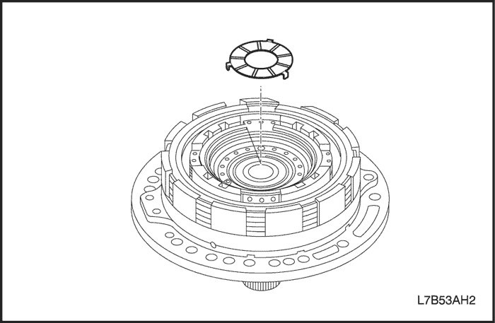


Desmontaje de la bomba de aceite y freno de inercia de 2ª (B1), freno de 2ª (B2)
Herramientas necesarias
Compresor de muelles del embrague J 23327
Extractor del anillo elástico de retención J 28585
Compresor de muelles de retorno del embrague de inercia J 41236
Puente del compresor de muelles J 45164
- Desmonte la pista de empuje.
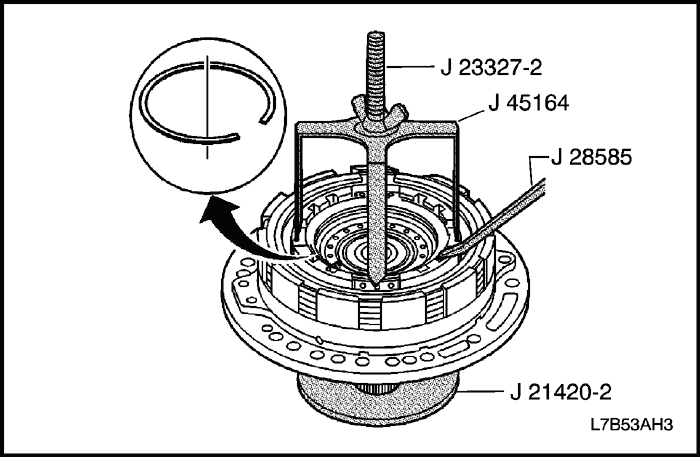
- Desmonte la brida, el disco y el plato del freno de inercia de 2ª (B1).
- Utilizando J 45164, J 21420-2 y J 23327-2, que son parte de la J 23327, comprima el muelle.
- Utilizando J 28585, retire el anillo elástico del conjunto de la bomba de aceite.

- Desmonte la brida, los 3 discos y los 3 platos.
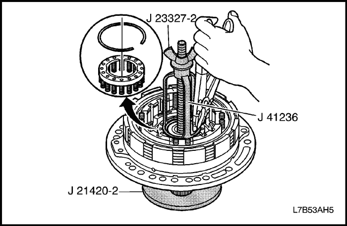
- Desmonte el muelle de retorno del pistón del freno.
- Instale la J 21420-2 y la J 23327-2, que forman parte de J 23327, y la J 41236, a continuación comprima el muelle.
- Use unos alicates para anillos elásticos para quitar el anillo elástico.
- Desmonte el conjunto del muelle de retorno del conjunto de la bomba de aceite.
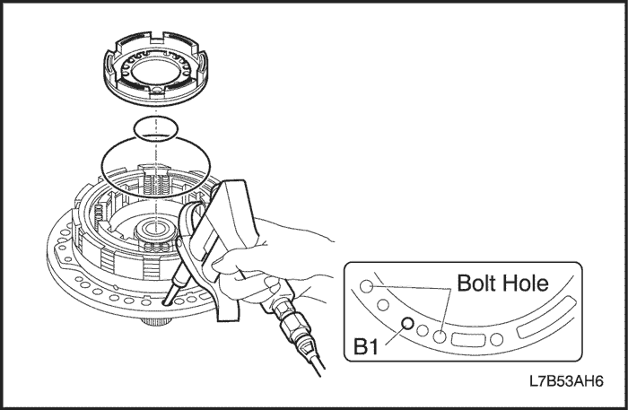
Precaución: Lleve gafas se seguridad si utiliza aire comprimido para evitar lesiones oculares.
- Desmonte el pistón del freno de inercia de 2ª (B1)
- Mientras presiona el pistón con la mano, aplique aire comprimido (4 kg/cm ²) en el conducto de aceite, tal y como se muestra en la figura, y desmonte el pistón B1.
Importante: Tenga cuidado de no dañar la junta tórica y el pistón.
- Quite las juntas tóricas del pistón.
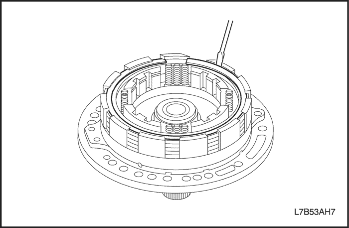
- Desmonte la brida, el disco y el plato del freno de 2ª (B2).
- Desmonte el anillo elástico de retención con un destornillador.

- Desmonte la brida, los 4 discos y los 4 platos.
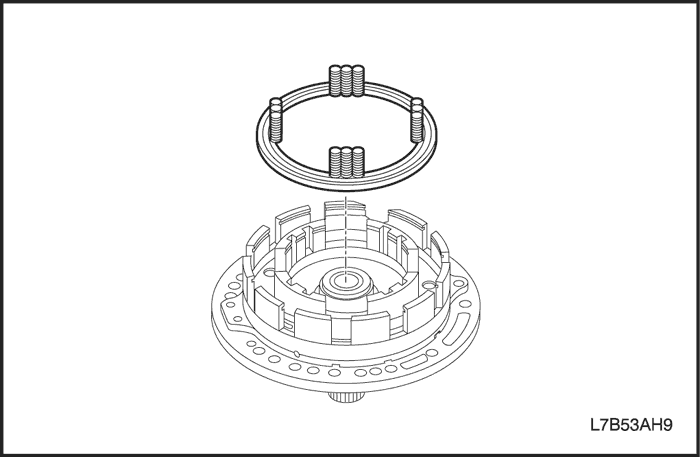
- Desmonte el conjunto del muelle de retorno.
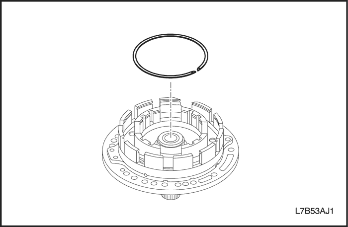
- Desmonte el anillo elástico.
Importante: Procure no dañar la cubierta de la bomba de aceite ni el pistón B2.
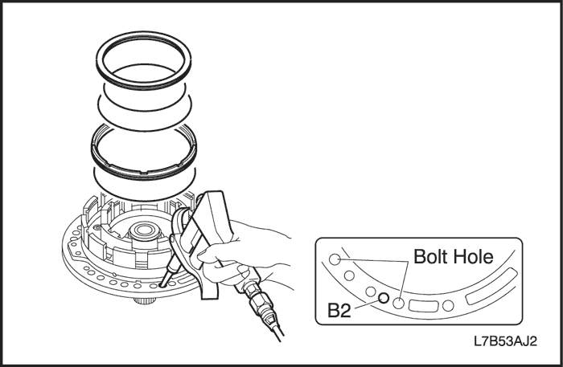
Precaución: Lleve gafas se seguridad si utiliza aire comprimido para evitar lesiones oculares.
- Desmonte el pistón del freno de 2ª (B2)
- Mientras presiona el pistón con la mano, aplique aire comprimido (4 kg/cm ²) en el conducto de aceite, tal y como se muestra en la figura, y desmonte el pistón B2.
Importante: Procure no dañar la cubierta de la bomba de aceite ni el pistón.
- Quite las juntas tóricas del pistón.
Inspección del freno de inercia de 2ª (B1) y del freno de 2ª (B2)
- Compruebe la brida, el disco y el plato.
- Compruebe si la superficie de deslizamiento del disco y el plano no está desgastado o quemado. Si el disco o el plato está desgastado o quemado, sustitúyalos.
Importante: Sustituya por discos nuevos empapándolos durante un mínimo de dos horas en ATF.
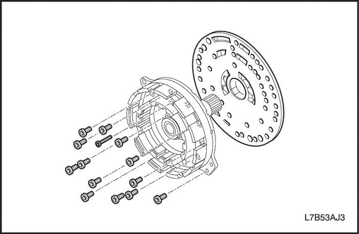
- Desmonte la tapa de la bomba de aceite.
- Quite los 14 tornillos torx.
Importante: Procure no dejar caer el cuerpo de la bomba de aceite y la cubierta de la bomba de aceite.
- Desmonte la tapa de la bomba de aceite.
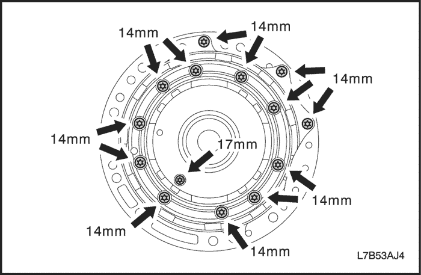
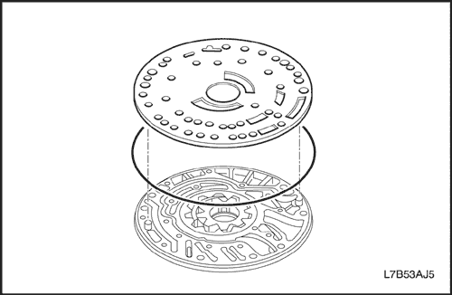
- Desmonte el plato de la bomba de aceite.
- Desmonte el plato de la bomba de aceite.
- Retire la junta tórica del cuerpo de la bomba.
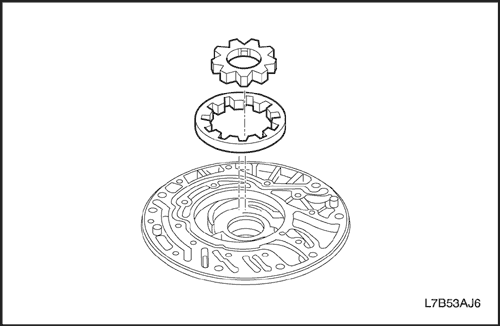
- Desmonte el engranaje propulsor de la bomba de aceite y el engranaje conducido de la bomba.
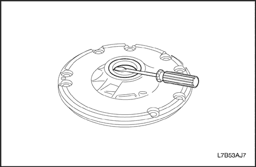
- Retire el retén de aceite.
- Desmonte el retén de aceite con un destornillador.
Importante: Procure no dañar el casquillo del cuerpo de la bomba de aceite.
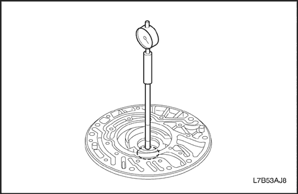
Inspección del casquillo de bomba de aceite
- Compruebe el casquillo del cuerpo de la bomba de aceite.
- Mida con un comparador el diámetro interior del casquillo del cuerpo de la bomba del aceite.
Diámetro interior:
- Estándar:38,113-38,138 mm (1,500-1,501 pulg.)
- Máximo: 38,188 mm (1,503 pulg.)
Importante: Mida en diferentes puntos y obtenga la media. Si la medición es superior al valor máximo, sustituya el cuerpo de la bomba de aceite por otro nuevo.
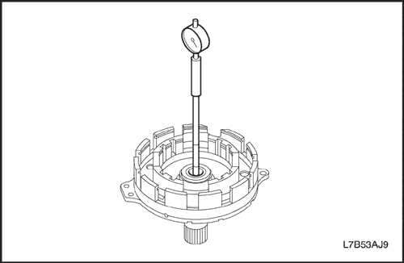
- Compruebe el casquillo del eje del estátor.
- Mida con un comparador el diámetro interior del casquillo del eje del estátor.
Diámetro interior:
- Estándar: 22,201-22,227 mm (0,874-0,875 pulg.)
- Máximo: 22,257 mm (0,876 pulg.)
Importante: Mida en diferentes puntos y obtenga la media. Si la medición es superior al valor máximo, sustituya el eje del estátor por otro nuevo.
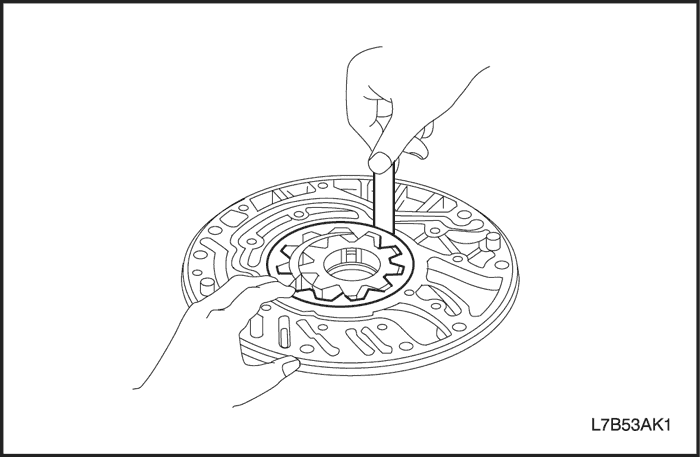
- Compruebe la holgura del cuerpo.
- Empuje el engranaje conducido a un lado del cuerpo. Mida la holgura con una galga.
Holgura del cuerpo:
- Estándar : 0,075-0,150 mm
- Máxima: 0,200 mm
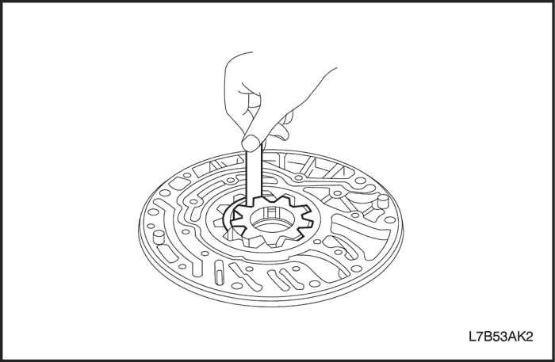
- Compruebe la holgura de la punta de ambos engranajes.
- Utilizando una galga, mida entre los dientes del engranaje propulsor y la parte con forma creciente del cuerpo de la bomba.
Holgura de la punta del engranaje de propulsión:
- Estándar: 0,013-0,292 mm (0,001-0,011 pulg.)
- Máxima: 0,342 mm (0,013 pulg.)
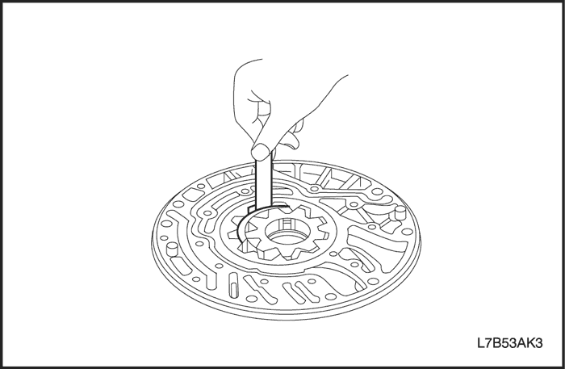
- Utilizando una galga, mida entre los dientes del engranaje conducido y la parte con forma creciente del cuerpo de la bomba.
Holgura de la punta del engranaje conducido:
- Estándar: 0,004-0,248 mm (0,0001-0,010 pulg.)
- Máxima: 0,298 mm (0,012 pulg.)
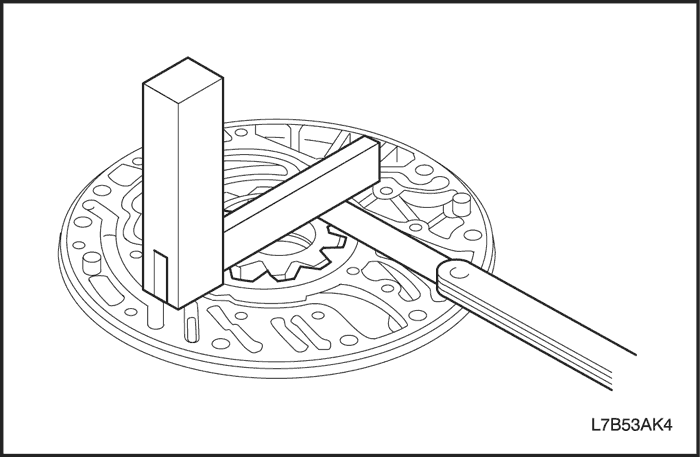
- Compruebe la holgura lateral de ambos engranajes.
- Mida con una regla de acero y una galga la holgura lateral de los dos engranajes.
Holgura lateral del engranaje propulsor y conducido:
- Estándar: 0,03 - 0,05 mm (0,001 - 0,002 pulg.)
- Máxima: 0,10 mm (0,004 pulg.)
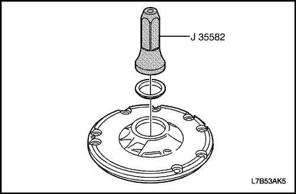
Conjunto de bomba de aceite
Herramientas necesarias
Instalador de la junta de la bomba del aceite J 35582
- Monte el retén de aceite.
- Recubra la superficie interior del cuerpo de la bomba con ATF.
- Utilizando J 35582, coloque un nuevo retén de aceite. El extremo del retén debe quedar al ras con el borde exterior del cuerpo de la bomba.
- Monte el engranaje de accionamiento y el engranaje conducido de la bomba de aceite.
- Recubra la superficie del cuerpo de la bomba con ATF.
- Instale el engranaje propulsor y el engranaje conducido de la bomba de aceite en la bomba.
- Monte el plato de la bomba de aceite.
- Recubra la junta tórica nueva con aceite de la caja de cambios automática y colóquela en el cuerpo de la bomba de aceite.
- Alinee el orificio del plato de la bomba de aceite con el pasador del cuerpo de la bomba de aceite.
- Monte la tapa de la bomba de aceite.
- Alinee la tapa de la bomba de aceite con cada orificio de los tornillos del cuerpo de la bomba y apriete temporalmente los 14 tornillos torx.
- Apriete los 14 tornillos torx.
Apretar
Apriete el tornillo de la tapa de la bomba de aceite (14 mm) hasta 12 N•m (106 lb-pulg.).
Apriete el tornillo (17 mm) de la tapa de la bomba de aceite hasta 7 N•m (62 lb-pulg.).
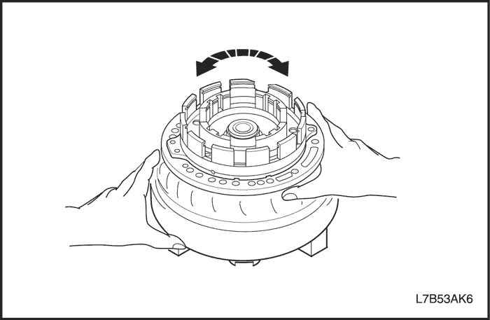
- Compruebe el giro del engranaje de propulsión de la bomba de aceite.
- Asegúrese de que el engranaje de propulsión gira suavemente al instalarse en el convertidor de par.
Importante: Tenga cuidado de no ocasionar daños al labio del retén.
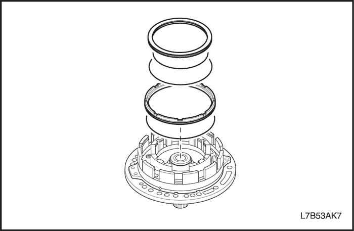
Montaje del freno de inercia de 2ª (B1) y del freno de 2ª (B2)
Herramientas necesarias
Compresor de muelles del embrague J 23327
Extractor del anillo elástico de retención J 28585
Compresor de muelles de retorno del embrague de inercia J 41236
Puente del compresor de muelles J 45164
- Instale el pistón del freno de 2ª (B2).
- Recubra las juntas tóricas nuevas con aceite de la caja de cambios automática y colóquelas en los pistones.
- Recubra las superficies interiores de la tapa de la bomba con ATF.
- Presione el pistón en la tapa de la bomba de aceite.
- Monte el anillo elástico.
Importante: Procure no dañar la tapa de la bomba de aceite.
- Monte el muelle de retorno del freno de 2ª (B2).
- Coloque el muelle de retorno del pistón con el muelle mirando hacia arriba.
- Instale el plato, el disco y la brida del freno de 2ª (B2).
- Instale la brida, el disco y el plato tal y como se muestra en la imagen.
Importante: Asegúrese del número y orden de platos y discos.
-
- Orden: P-D-P-D-P-D-P-D-F
| Embrague y freno | Brida (F) | Plato (P) | Disco (D) |
| Freno de 2ª (B2) | 1 | 4 | 4 |
- Coloque el anillo elástico de retención con un destornillador.
- Verifique que el espacio entre puntas del anillo elástico de retención no quede alineado con alguno de los cortes.
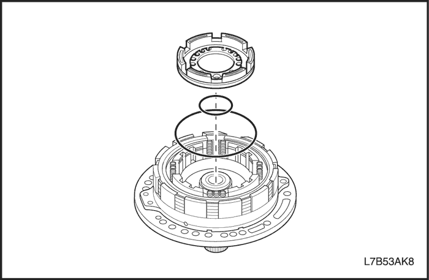
- Monte el pistón del freno de inercia de 2ª (B1)
- Recubra las juntas tóricas nuevas con aceite de la caja de cambios automática y colóquelas en los pistones.
- Recubra las superficies interiores de la tapa de la bomba con ATF.
- Presione el pistón en la tapa de la bomba de aceite.
- Monte el muelle de retorno del freno de inercia de 2ª (B1).
- Coloque las herramientas J 21420-2 y J 23327-2, que son parte de la J 23327, y J 41236, en el muelle de retorno y a continuación comprima el muelle.
- Utilizando los alicates para anillos elásticos, instale el anillo elástico en la ranura de la tapa de la bomba de aceite.
- Monte la brida, el disco y el plato del freno de inercia de 2ª (B1).
- Instale la brida, el disco y el plato tal y como se muestra en la imagen.
Importante: Asegúrese del número y orden de platos y discos.
| Embrague y freno | Brida (F) | Plato (P) | Disco (D) |
| Freno de inercia 2ª (B1) | 1 | 3 | 3 |
- Utilizando J 45164, J 21420-2 y J 23327-2, que son parte de la J 23327, comprima el muelle.
- Utilizando J 28585, instale el anillo elástico en la ranura del eje del estátor.
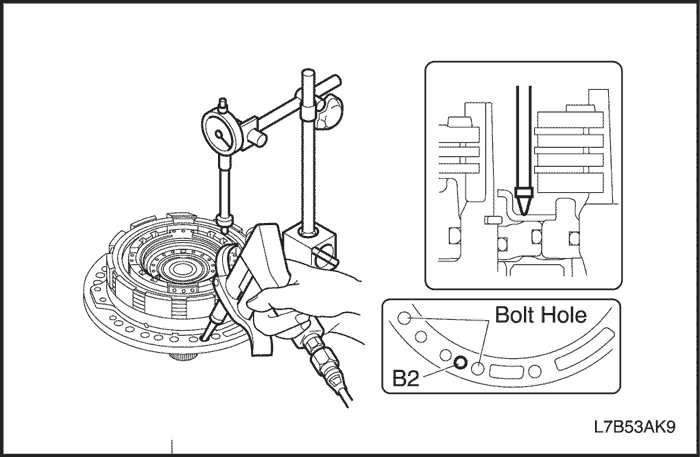
Precaución: Lleve gafas se seguridad si utiliza aire comprimido para evitar lesiones oculares.
- Compruebe la carrera de pistón del freno de 2ª (B2).
- Ajuste un comparador tal y como se muestra en la imagen.
- Al aplicar aire comprimido (4 kg/cm²) en el conducto de aceite tal y como se muestra, mida la carrera del pistón y compruebe si éste se mueve con suavidad.
- Carrera del pistón: 1,10-1,50 mm (0,043-0,059 pulg.)
Si la carrera del pistón está fuera de las especificaciones, seleccione otra brida.
- Tipo de espesor de brida: 3,6 mm (0,142 pulg.), 3,8 mm (0,150 pulg.), 4,0 mm (0,157 pulg.)
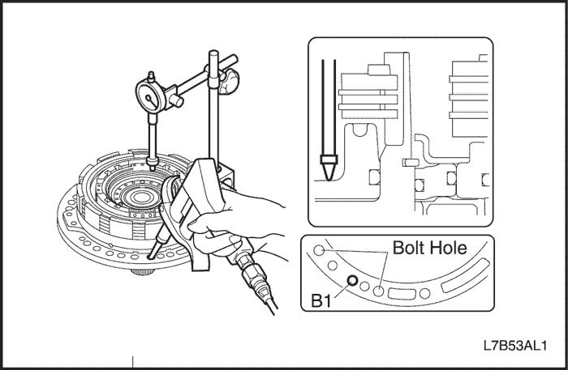
- Compruebe la carrera de pistón del freno de inercia de 2ª (B1).
- Ajuste un comparador tal y como se muestra en la imagen.
- Al aplicar aire comprimido (4 kg/cm²) en el conducto de aceite tal y como se muestra, mida la carrera del pistón y compruebe si éste se mueve con suavidad.
- Carrera del pistón: 1,24-1,96 mm (0,049-0,077 pulg.)
- Ponga la arandela de empuje.
- Instale la arandela de empuje con grasa, dejando la superficie plana mirando hacia arriba.
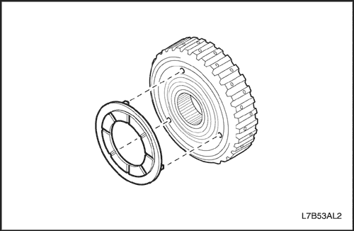
Desmontaje del buje del freno de inercia de 2ª (B1), buje del freno de 2ª (B2) y embrague de una dirección nº 1 (F1)
- Desmonte la arandela de empuje.
- Desmonte la arandela de empuje de la pista exterior.
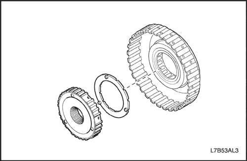
- Desmonte el buje del freno de inercia de 2ª (B1)
- Desmonte el buje B1 de la pista exterior del embrague de 1 dirección.
- Desmonte la arandela de empuje del buje B1.
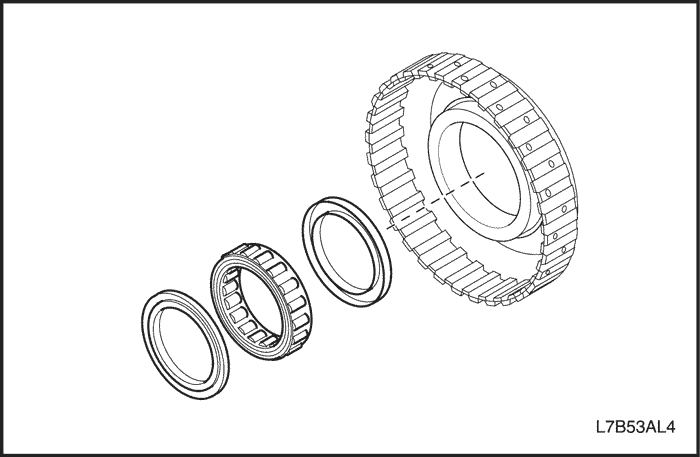
- Desmonte el embrague de 1 dirección nº 1 (F1).
- Desmonte el F1 de la pista exterior del embrague de 1 dirección.
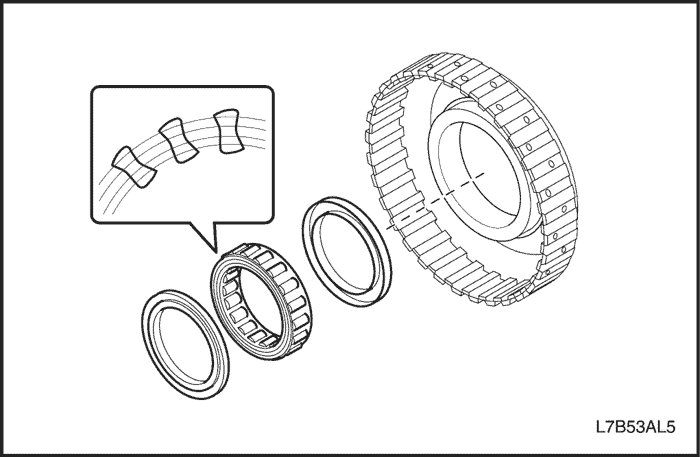
Montaje del buje del freno de inercia de 2ª (B1), buje del freno de 2ª (B2) y embrague de una dirección nº 1 (F1)
- Monte el embrague de 1 dirección nº 1 (F1).
- Monte el F1 en la pista exterior del embrague de 1 dirección.
Importante: No confunda la dirección del embrague de 1 dirección.
- Instale la arandela de empuje en el buje B1.
Importante: Recubra la arandela de empuje con grasa. Alinee la lengüeta de la arandela con la ranura del buje B1.
- Monte el buje B1 en la pista exterior del embrague de 1 dirección.
Importante: Mientras gira el buje B1, deslícelo por la pista exterior del embrague de 1 dirección.
- Recubra la arandela de empuje con grasa. Alinee la lengüeta de la arandela con la ranura de la pista exterior del embrague de 1 dirección.
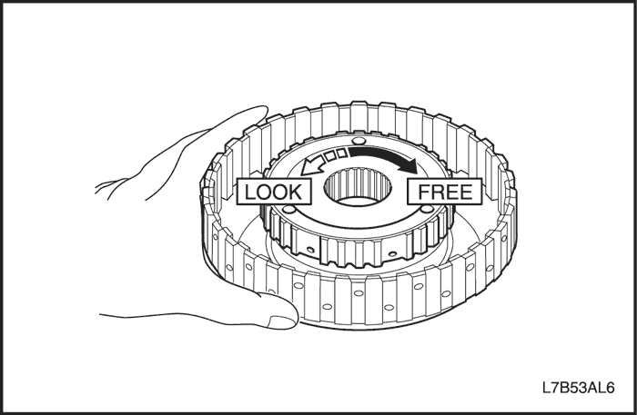
- Compruebe el funcionamiento de dicho embrague.
- Sujete la pista exterior de embrague de 1 dirección y compruebe si el buje B1 puede girar libremente en el sentido de las agujas del reloj y si se bloquea en el sentido contrario.
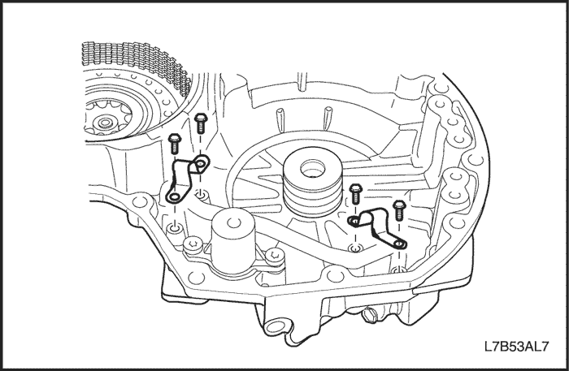
Desmontaje de la caja trasera
- Desmonte el tubo de aplicación del embrague de reducción (C3).
- Quite los 4 tornillos y las 2 abrazaderas de la caja trasera.
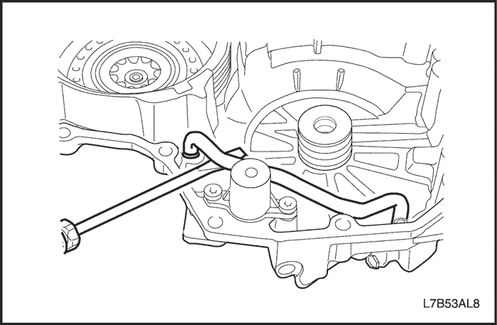
- Utilizando un destornillador, desmonte el tubo de aplicación del embrague de reducción (C3).
Importante: Procure no dañar el tubo de aplicación C3 ni la caja trasera.
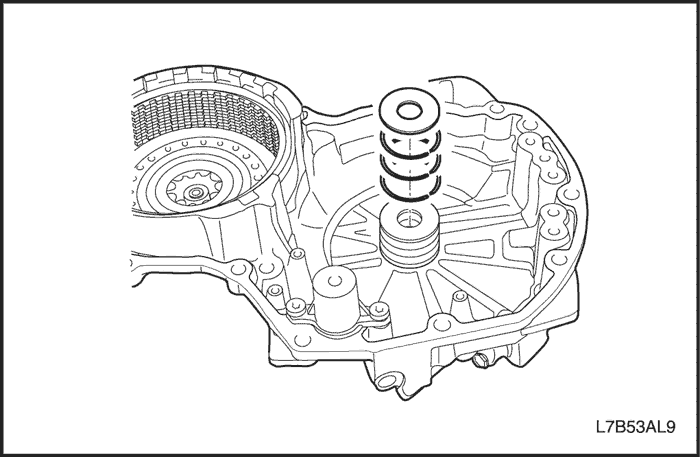
- Desmonte la pista de empuje y la junta.
- Desmonte la pista de empuje de la caja trasera.
- Desmonte las 3 juntas de la caja trasera.
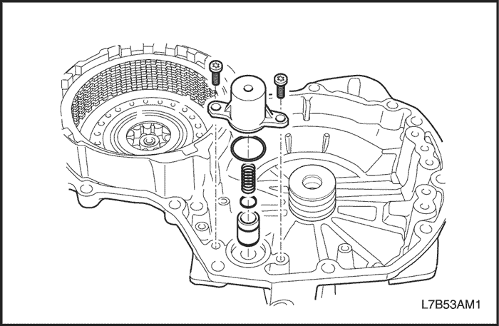
- Desmonte el acumulador del embrague de avance (C1).
- Quite los 2 tornillos Torx y la tapa del acumulador.
- Desmonte el pistón del acumulador y el muelle, la junta tórica y la junta de la tapa del acumulador.
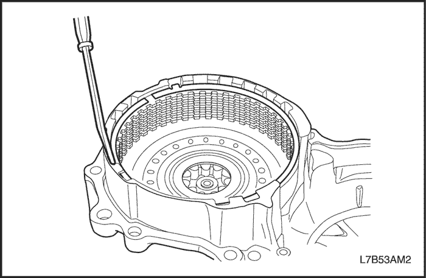
Desmontaje del freno B5
Herramientas necesarias
Compresor de muelles del embrague J 23327
Compresor del conjunto del sobrecompresor y embrague J 23456
Instalador de la pista del cojinete del diferencial J 45184
Extractor del anillo elástico de retención J 28585
- Desmonte la brida, el disco, los platos y el plato de apoyo.
- Utilizando J 28585, desmonte el anillo elástico.
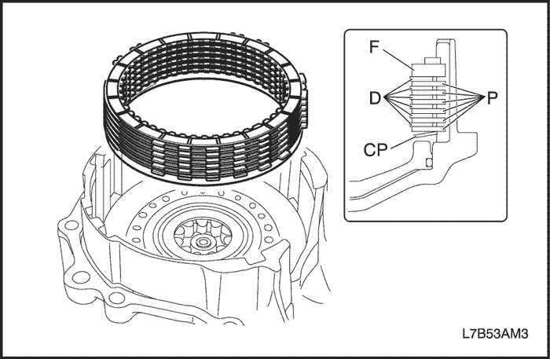
- Desmonte la brida, 6 discos, 6 platos y el plato de apoyo.
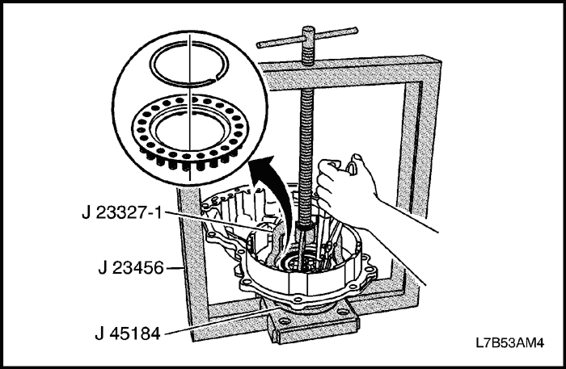
Importante: Procure no doblar el conjunto del muelle de retorno.
- Desmonte el conjunto del muelle de retorno.
- Coloque la J 45184 en el centro de la J 23456.
- Coloque la carcasa de la caja de cambios en la J 45184.
- Utilizando la J 23327-1, que es la parte de puente de la J 23327, comprima el muelle de retorno y quite el anillo elástico con unos alicates.
- Retire todas las herramientas.
- Desmonte el conjunto del muelle de retorno.
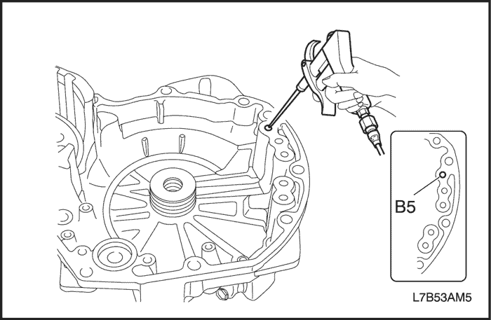
Precaución: Lleve gafas se seguridad si utiliza aire comprimido para evitar lesiones oculares.
- Desmonte el pistón de freno B5.
- Mientras presiona el pistón con la mano, aplique aire comprimido (4 kg/cm ²) en el conducto de aceite, tal y como se muestra en la figura, y desmonte el pistón.
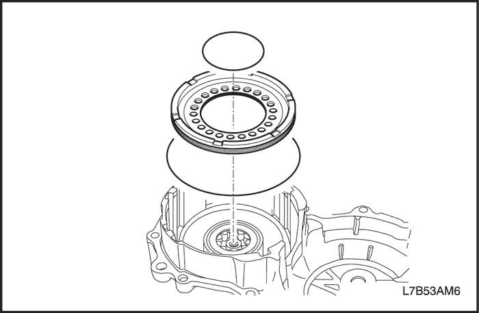
- Quite las juntas tóricas del pistón.
Inspección del freno B5
- Compruebe la brida, el disco, el plato y el plato de apoyo.
- Compruebe si la superficie de deslizamiento del disco y el plano no está desgastado o quemado. Si el disco o el plato está desgastado o quemado, sustitúyalos.
Importante: Sustituya por discos nuevos empapándolos durante un mínimo de dos horas en ATF.
Montaje del freno B5 y de la caja trasera
Herramientas necesarias
Compresor de muelles del embrague J 23327
Compresor del conjunto del sobrecompresor y embrague J 23456
Instalador de la pista del cojinete del diferencial J 45184
Extractor del anillo elástico de retención J 28585
- Monte el pistón de freno B5.
- Recubra las juntas tóricas nuevas con aceite de la caja de cambios automática y colóquelas en los pistones.
- Recubra la superficie interior de la caja trasera con ATF.
- Presione el pistón en la caja trasera. Tenga cuidado de no dañar las juntas tóricas.
Importante: Procure no doblar el conjunto del muelle de retorno.
- Instale el conjunto del muelle de retorno B5.
- Coloque el conjunto del muelle de retorno en el pistón del freno B5.
- Coloque la J 45184 en el centro de la J 23456.
- Coloque la carcasa de la caja de cambios en la J 45184.
- Utilizando la J 23327-1, que es la parte de puente de la J 23327, comprima el conjunto del muelle de retorno.
- Use unos alicates para anillos elásticos para instalarlos.
- Retire todas las herramientas.
- Instale la brida, el plato, el disco y el plato de apoyo.
- Monte el plato de apoyo.
Importante: Asegúrese de la dirección del pato de apoyo.
- Instale la brida, los discos y los platos tal y como se muestra en la imagen.
Importante: Asegúrese del número y orden de platos y discos.
- Orden: F-D-P-D-P-D-P-D-P-D-P-D-P-CP
| Embrague y freno | Brida (F) | Plato (P) | Disco (D) | Plato de apoyo (CP) |
| Freno B5 | 1 | 6 | 6 | 1 |
- Instale el anillo elástico con un destornillador en la ranura.
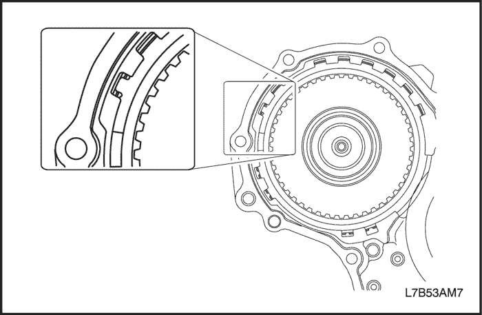
Importante: Asegúrese de la dirección del anillo elástico tal y como se muestra en la imagen.
- Monte el acumulador del embrague de avance (C1).
- Recubra el nuevo anillo elástico con ATF e instale el pistón del acumulador.
- Instale el pistón del acumulador y el muelle en la tapa del acumulador.
- Recubra la nueva junta tórica con ATF e instale la tapa del acumulador.
- Coloque la tapa del acumulador en la caja trasera y apriete los 2 tornillos torx.
Apretar
Apriete el tornillo del acumulador del embrague de avance (C1) hasta 10 N•m (89 lb-pulg.).
- Monte la junta.
- Recubra las 3 nuevas juntas e instálelas en la caja trasera.
- Monte la pista de empuje en la caja trasera.
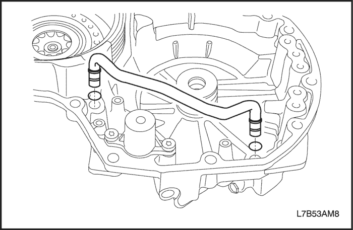
- Monte el tubo de aplicación del embrague de reducción (C3).
- Recubra las nuevas juntas tóricas con ATF e instálelas en el tubo de aplicación del embrague de reducción (C3).
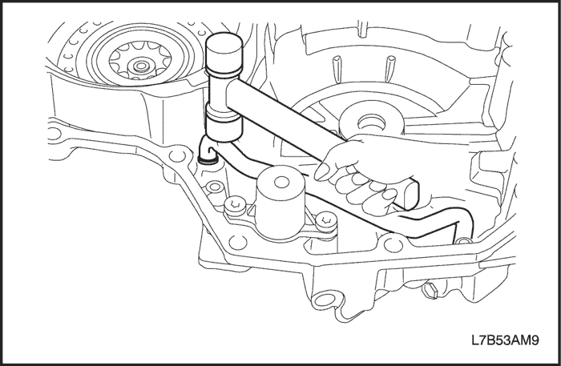
- Instale el tubo de aplicación C3 en la caja trasera con un martillo de plástico.
Importante: Procure no dañar las juntas tóricas y el tubo de aplicación C3.
- Coloque las 2 abrazaderas y apriete los 4 tornillos.
Apretar
Apriete el tornillo del embrague de reducción hasta 7 N•m (62 lb-pulg).
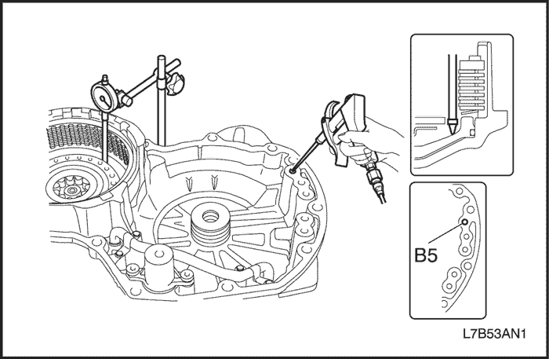
Precaución: Lleve gafas se seguridad si utiliza aire comprimido para evitar lesiones oculares.
- Compruebe la carrera del pistón del freno B5.
- Ajuste un comparador tal y como se muestra en la imagen.
- Al aplicar aire comprimido (4 kg/cm²) en el conducto de aceite tal y como se muestra, mida la carrera del pistón y compruebe si éste se mueve con suavidad.
- Pistón: 2,34-2,70 mm (0,092-0,106 pulg.)
Si la carrera del pistón está fuera de las especificaciones, seleccione otra brida.
- Tipo de espesor de brida: 5,0 mm (0,197 pulg.), 5,1 mm (0,201 pulg.), 5,2 mm (0,205 pulg.), 5,3 mm (0,209 pulg.), 5,5 mm (0,217 pulg.)
 | |  | |
| © Copyright Chevrolet Europe. Reservados todos los derechos |